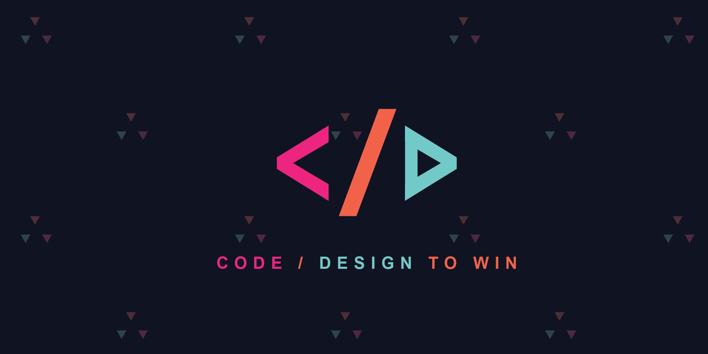
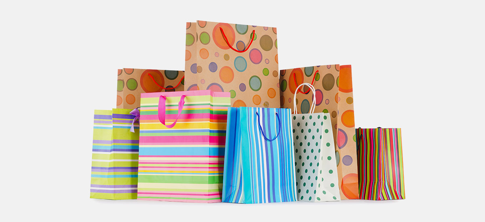

<main class="mainn">
	<div id="left-pane">
		<h2><strong>Running Contests</strong></h2>
		<div id="carouselExampleControls" class="carousel slide" data-ride="carousel">
			<div class="carousel-inner">
				<div class="carousel-item " ng-show="(n==1)"  ng-class="{anim:(n==1)}">
					<div class="article">
						<h3 class="contest-title anim"><strong>Code & Win</strong></h3>
						<br />
						<span><b>Organized by : </b>Codificaso</span><br />
						<span><b>Date : </b>31/Feb/2019</span><br />
						<span><b>Information : </b>
							<p>This is a online contest introducing for IIT Bhilai students for world source development. With a wide
								variety
								of
								bite-sized tasks, it’s easy for beginners to jump in and get started no matter what skills they have.</p>

							<p>Mentors from our participating organizations lend a helping hand as participants learn what it’s like to
								work
								on
								an
								open source project. Participants get to work on real codes and win prize of 1,500 rupees in 2 hours.
						</span></p>
						<div style="display: flex; flex-direction: row;">
							<a class="button" href="#!form">Register</a>
							<a class="button" href="#!form_sub">Submit Solution</a>
						</div>
					</div>
				</div>
				<div class="carousel-item " ng-show="(n==2)"  ng-class="{anim:(n==2)}">
					<div class="article">
						<h3 class="contest-title"><strong>Paper-bag Making</strong></h3>
						<br />
						<span><b>Organized by : </b><a href="#!nss"><b style=color:black>NSS</b></a></span><br />
						<span><b>Date : </b>31//Feb/2019</span><br />
						<span><b>Information : </b>Some NSS volunteers received training on how to make paper bags at <a href="https://www.iitbhilai.ac.in"
							 target="_blank">IIT
								Bhilai</a>. These volunteers trained other NSS volunteers. The volunteers prepared around 50 bags and
							distributedthem free of cost in the adopted area,near by vicinities as well as in the shops of Arnala village
							when the studentswent for the rural camp. These paper bags had messages on a variety of social issues. This
							activity received enthusiastic response from the NSS Volunteers and also from the local community. This
							activity
							was possible because of thesupport from the college library which provided old news papers.</span>
					</div>
				</div>
				<div class="carousel-item " ng-show="(n==3)" ng-class="{anim:(n==3)}">
					<div class="article">
						<h3 class="contest-title"><strong>Display of 3D Models</strong></h3>
						<br />
						<span><b>Organized by : </b><b style=color:black>SES : Space Exploration Society</b></span><br />
						<span><b>Date : </b>31//Feb/2019</span><br />
						<span><b>Information : </b>The space technology always intrigues the thoughts of best engineers and
							visionaries.Keeping this in mind,we are presenting you an opportunity to discuss and explore the past,present
							and future of the space technology. Watch as 3D models come to life with the magic of augmented reality,
							enabling you to look at each ship as if it were right in front of you. A truly magical experience.
							Exhibition <strong>(Display of 3D models)</strong></span>.
					</div>
				</div>
			</div>
			<a id="prev" class="carousel-control-prev" role="button" data-slide="prev" ng-click="prev()">
				<span class="carousel-control-prev-icon" aria-hidden="true"></span>
				<span class="sr-only">Previous</span>
			</a>
			<a id="next" class="carousel-control-next"  role="button" data-slide="next" ng-click="next()">
				<span class="carousel-control-next-icon" aria-hidden="true"></span>
				<span class="sr-only">Next</span>
			</a>
		</div>
	</div>

	
</main>